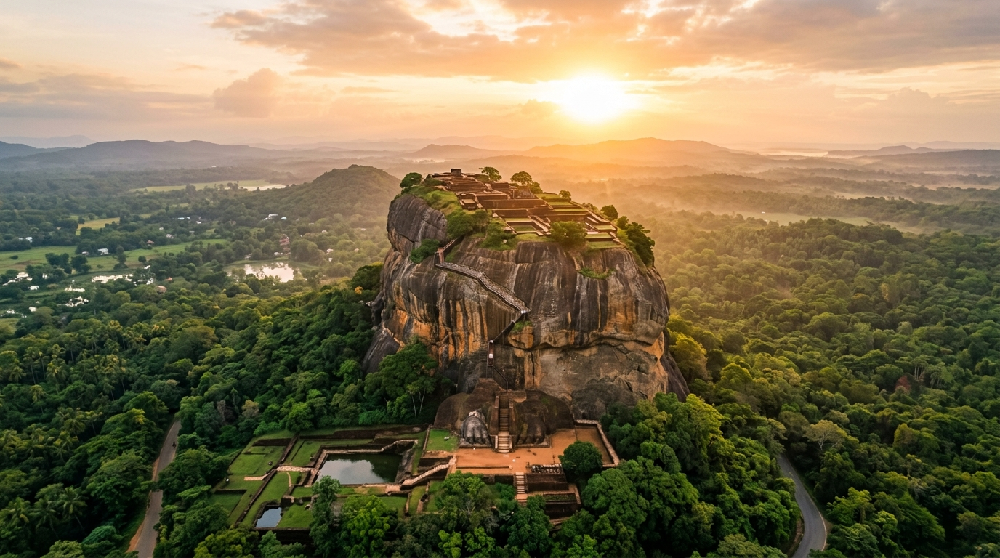
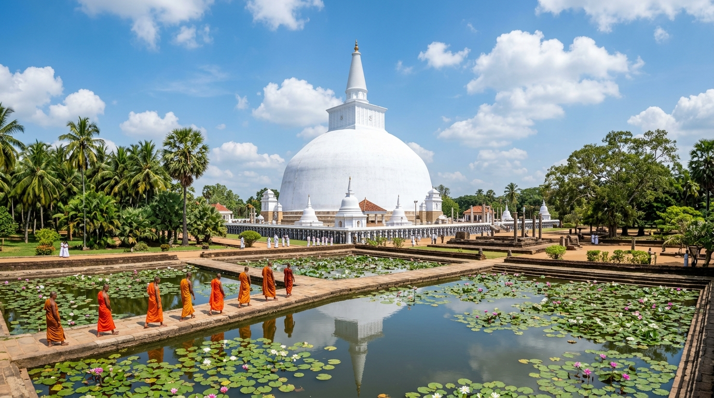
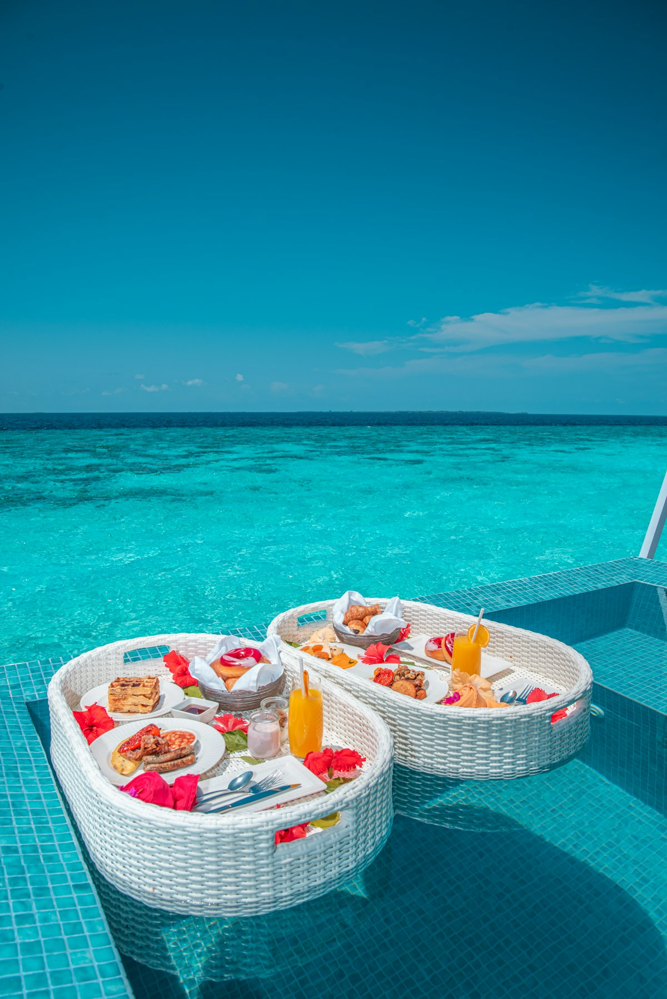
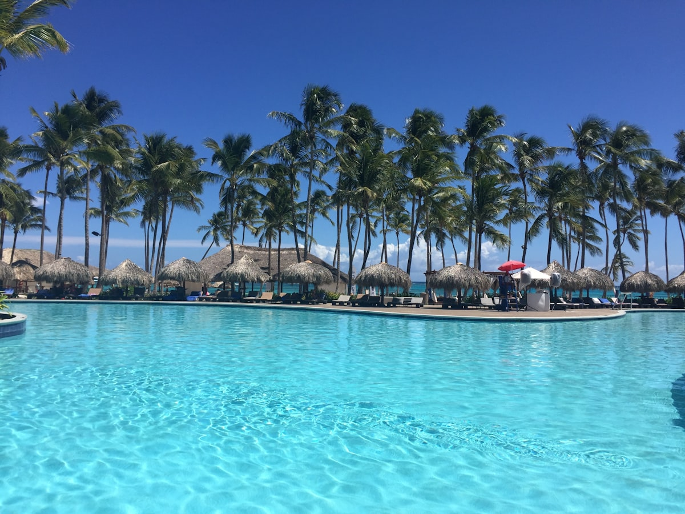

Explore The Wonders of Sri Lanka
Immerse yourself in our handpicked collection of sacred ancient citadels, thundering waterfalls, and lush tropical wilderness sanctuaries.

Sigiriya Lion Rock Citadel
The 8th Wonder of the World. A staggering 200m monolithic rock fortress built by King Kashyapa with ancient frescoes, mirror wall & hydraulic water gardens.

Anuradhapura Sacred Kingdom
The first capital of Sri Lanka. Home to the towering white Ruwanwelisaya stupa, the sacred Jaya Sri Maha Bodhi (oldest documented tree), and giant ancient irrigation reservoirs.

Polonnaruwa Medieval City
Marvel at masterfully preserved 12th-century ruins, the 7-story Royal Palace, the circular Vatadage, and the colossal rock-carved granite Buddha statues of Gal Vihara.

Dambulla Golden Cave Temple
The largest and best-preserved cave temple complex in Sri Lanka, boasting 5 sanctuary caves adorned with over 150 Buddha statues and 2,100 sq meters of ancient ceiling murals.

Temple of the Tooth (Sri Dalada Maligawa)
Nestled in the lush hills of Kandy, this golden-roofed royal temple houses the sacred tooth relic of Gautama Buddha, the supreme symbol of Sri Lankan sovereignty.

Galle Dutch Maritime Fort
A living 16th-century fortress blending European architecture and South Asian traditions. Walk along the historic stone bastions overlooking the turquoise Indian Ocean.

Diyaluma Waterfall & Rock Pools
Sri Lanka's 2nd highest waterfall. Famous worldwide for its natural clifftop infinity rock pools at the upper falls where adventurers can swim with breathtaking vistas.

Dunhinda Waterfall (දුන්හිඳ)
Known as the "Smoky Fall" due to the perpetual veil of water vapour mist created as the river leaps 64 meters into a massive canyon pool surrounded by untouched jungle.
Ravana Falls & Caves (රාවණා ඇල්ල)
Steeped in Ramayana mythology, this wild tiered cataract drops over concave rock outcrops. Legend says King Ravana hid Princess Sita in the subterranean caves behind the falls.
Bambarakanda Falls (බඹරකන්ද)
Sri Lanka's highest waterfall, plummeting 263 meters through an evergreen pine forest valley. A secluded haven for nature lovers and landscape photographers.

Sinharaja Virgin Rain Forest (සිංහරාජය)
The country's last viable area of primary tropical rainforest. Home to 95% of Sri Lanka’s endemic birds, rare amphibians, crystal jungle streams, and ancient medicinal flora.

Knuckles Conservation Forest (නකල්ස්)
A breathtaking UNESCO mountain wilderness resembling a clenched fist. Features mist-shrouded cloud forests, hidden pygmy forests, wild rivers, and 34 distinct peaks.

Horton Plains & World's End (හෝර්ටන්)
An ethereal high-altitude plateau 2,100m above sea level ending abruptly at "World's End" — a sheer 870m vertical precipice with Baker's Falls cascading below.
Yala National Park (යාල වනෝද්යානය)
The premier wildlife park in Sri Lanka boasting the world's highest concentration of wild leopards, herds of Asian elephants, sloth bears, crocodiles, and exotic birds.